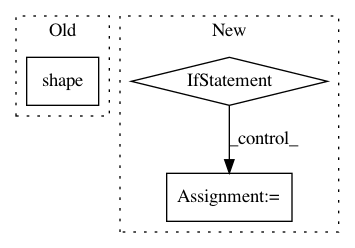

f3d66c98e15a8d48ba1b546b53d74af6f1535ecf,trunk/SUAVE/Methods/Missions/Segments/Ground/Common.py,,solve_residuals,#,201
Before Change
acceleration = np.dot(D , v)
conditions.frames.inertial.acceleration_vector = acceleration
segment.state.residuals.acceleration_x = np.reshape(((FT[:,0]) / m[:,0] - acceleration[:,0]),np.shape(m))
After Change
acceleration = np.dot(D , v)
conditions.frames.inertial.acceleration_vector = acceleration
if vf == 0.0: vf = 0.01
segment.state.residuals.forces[:,0] = FT[1:,0]/m[1:,0] - acceleration[1:,0]
segment.state.residuals.final_velocity_error = (v[-1,0] - vf)
return
In pattern: SUPERPATTERN
Frequency: 3
Non-data size: 3
Instances
Project Name: suavecode/SUAVE
Commit Name: f3d66c98e15a8d48ba1b546b53d74af6f1535ecf
Time: 2020-07-18
Author: ebotero@stanford.edu
File Name: trunk/SUAVE/Methods/Missions/Segments/Ground/Common.py
Class Name:
Method Name: solve_residuals
Project Name: tensorly/tensorly
Commit Name: 5f078112011a66a93432cb6d38c03935a10f382e
Time: 2020-07-10
Author: git@ameyer.me
File Name: tensorly/decomposition/candecomp_parafac.py
Class Name:
Method Name: non_negative_parafac
Project Name: librosa/librosa
Commit Name: 2bae518e899657e536572fa59df6e1587795e397
Time: 2014-12-30
Author: brian.mcfee@nyu.edu
File Name: librosa/feature.py
Class Name:
Method Name: line_features